Navazuje na Vandino „Auta nelétají“ ze SB14, pointa celého skoku.
Vanguard × Jan Chundela · interní
Výroba po natáčení 27. 10.
Tři videa najednou: brokerské, Ferrari skok a iPhone one-shot. Matrix až po dotáčce. Tady schvaluješ varianty a postup; co klikneš, vidím hned.
Schvalování se nepřipojilo. Napiš mi volbu do chatu.
Higgsfield · 1 000 kr. na tato videa639 / 1 000
Fáze 1Fáze 2 · teďFáze 3Rezerva
Vanda 12 · hlasy + klon 44 · obrázky 14 · skoky 90 · trénink Honzy ~21 · test modelů 100 · F1 Kling 4 (29 klipů) 357,5
Stav účtu4 449,9 kr.
Výhled: utraceno 639 + opravy F1 0–150 + S2 ~300≈ 940–1 090 / 1 000
Test 5. 11. · Kling 4 vs Seedance 2.5 · 720p, nejkratší délky
Který model na Ferrari? 5 záběrů vedle sebe
Stejný obrázek, stejný popis pohybu, oba modely v 720p. Kling 4 = 3 s za 6,75 kr, Seedance 2.5 = 4 s (kratší neumí) za 28 kr. U SB13 Kling mluví česky sám a hlas je pak přepnutý na Honzův klon, Seedance dostal rovnou Honzovu nahrávku „Tak jo. Jedem.“ jako zvukovou předlohu. U každého záběru klikni, který je lepší, nahoře je celé srovnání za sebou.
SB02 · projíždí kolem vchodu
Kling 4720p · 3 s · 6,75 kr
Seedance 2.5720p · 4 s · 28 kr
Kling: auto projede kolem kamery a odjede z obrazu. Seedance nezačne tvým obrázkem: auto přijíždí ke kameře a tvým obrázkem končí.
SB03n · dron, zajíždí do garáže
Kling 4720p · 3 s · 6,75 kr
Seedance 2.5720p · 4 s · 28 kr
Oba zajedou do garáže. Kling drží dům i světla beze změny, Seedance víc přibližuje.
SB08n · vyjíždí z výtahu mezi hosty
Kling 4720p · 3 s · 6,75 kr
Seedance 2.5720p · 4 s · 28 kr
Kling vyjede z výtahu až těsně ke kameře. Seedance začne s autem hlouběji ve výtahu, ne přesně tvým obrázkem.
SB13 · lip-sync „Tak jo. Jedem.“
Kling 4720p · 3 s · 6,75 kr
Seedance 2.5720p · 4 s · 28 kr
Seedance řekne „Tak jo, jedem.“ (přepis sedí) a pusa se hýbe s textem. Kling česky zkomolil (přepis zní jako „Tak on, get him“), hlas je potom přepnutý na Honzu.
SB20 · průraz zábradlí, Vanda křičí
Kling 4720p · 3 s · 6,75 kr
Seedance 2.5720p · 4 s · 28 kr
Seedance drží Vandin obličej a výkřik celý záběr. U Klingu se Vanda otočí pryč a auto přeletí zábradlí.
Konec F1 · 5. 11. · po pádu do gauče v kině
Call to action a slide s volnými lofty
Honza dopadne do gauče v kině, podívá se do kamery a řekne hlášku (jeho klonovaným hlasem), pak střih na závěrečný slide. Slidy jsou z ChatGPT ze skutečných fotek z webu vanguardprague.cz. Čísla jsou z jejich ceníku k 5. 11.: 33 loftů v nabídce (15 Shell & Core, 11 White Wall, 7 na klíč). Ceny na slidech nejsou. Vyber hlášku a slide, klidně je zkombinuj jinak.
1. Hláška Honzy do kamery
Autovýtah je hlavní věc z webu („Autovýtah až k vašim dveřím“), sedí na slide B.
Sebeironie po pádu, nejměkčí prodej.
2. Závěrečný slide (klikni pro plnou velikost)
← přejeď prstem · klepnutím zvětšíš →
NOVÉA · Tři úrovně (světlý, jako web)
Shell & Core 15 · White Wall 11 · Na klíč 7, fotky úrovní z webu.NOVÉB · Ferrari si přivezte vlastní (tmavý)
Loft s červeným autem za sklem + 6 hotových loftů na klíč s patrem a plochou.NOVÉC · Volná místa (kino)
Navazuje na kino: mapa sedadel, 1 sedadlo = 1 volný loft, pozadí je skutečné kino Vanguardu.Ke schválení · F1 stilly K5 · vedle každé scény schválený záběr F1 v2, 3 nové varianty, 0 kr
Fast & Furious K5: jako schválený střih, Honza z pevného listu postavy – vyber A / B / C
Pořadí podle tebe: SB01 → SB40b → SB02 → SB40c → … Zelený rámeček = nové ke schválení. Schválené záběry: u každého je „♥ Líbí se mi“ – označ ty, které se ti líbily, a nové verze budu držet co nejblíž k nim. Vlevo vždy schválený záběr F1 v2, vpravo nové varianty. Kamera a lidé podle schváleného střihu (Blender srovnaný na schválené záběry), místo ze skutečných fotek, Honza ze schváleného vzoru + archu skutečných fotek (stejně jako Vanda), ve Ferrari vždy oba. Exteriéry: auto vložené jen do skutečné noční fotky jako u vjezdu do garáže, zbytek snímku zůstává skutečný. Klikni na obrázek pro plné rozlišení.
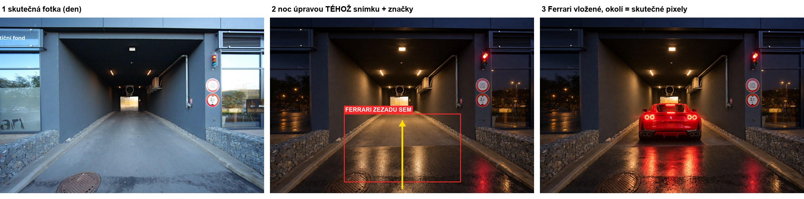
Srovnání Kling 4 vs Seedance: vybráno 0/3
SB01 · Dron: noční Modřany, věž Vanguardu s logem V. Malé červené Ferrari jede po hlavní ulici SMĚREM DO CENTRA (ne opačně), přijíždí k Vanguardu a u něj zahýbá DOPRAVA k domu (blinkr / natočená kola doprava, světla auta míří k domu).
← přejeď prstem na další variantu · klepnutím zvětšíš →
SB40b · Dron přes silnici v noci: Ferrari projíždí kolem hlavního vchodu Vanguardu se svítícím logem V.
← přejeď prstem na další variantu · klepnutím zvětšíš →
SB02 · Nízko u chodníku v noci: Ferrari projíždí kolem bílé stěny s logem V, mokrá ulice; bočním oknem je vidět Honza za volantem a Vanda vedle něj.
← přejeď prstem na další variantu · klepnutím zvětšíš →
SB40c · Dron zepředu na dům v noci: Ferrari projíždí vjezdem se závorou – závora a vjezd přesně na stejném místě jako na obrázku se schváleným SB40b (ten je správně), rozsvícená světla.
← přejeď prstem na další variantu · klepnutím zvětšíš →
SB03n · Polocelek nad korunami stromů: vidět dům i vjezd do podzemní garáže – VJEZD DO GARÁŽE JE DOLE UPROSTŘED DOMU (pod středem fasády), ne na kraji ani vedle domu; podoba vjezdu podle skutečné fotky. Ferrari zezadu zajíždí do garáže, brzdová světla. Uvnitř garáže SUCHO (venku může být vlhký asfalt).
← přejeď prstem na další variantu · klepnutím zvětšíš →
SB35 · Detail u země v podzemní garáži: přední kolo Ferrari se žlutým třmenem pomalu projíždí. V garáži je SUCHO – suchá betonová/epoxidová podlaha, žádná voda, louže ani mokré odlesky.
← přejeď prstem na další variantu · klepnutím zvětšíš →
SB04 · Ferrari zezadu vjíždí do otevřené kabiny autovýtahu z broušeného kovu, červená a tyrkysová světla. Podlaha garáže i výtahu SUCHÁ – žádná voda ani mokré odlesky.
← přejeď prstem na další variantu · klepnutím zvětšíš →
SB06 · Detail v interiéru Ferrari: Honzova ruka v kožené bundě drží telefon a palcem ťuká do aplikace (displej nečitelný), volant v popředí.
← přejeď prstem na další variantu · klepnutím zvětšíš →
SB36d · Zezadu u podlahy výtahu: zadní kolo Ferrari v kabině, dveře výtahu se otevírají do loftu. Podlaha SUCHÁ – žádná voda ani mokré odlesky.
← přejeď prstem na další variantu · klepnutím zvětšíš →
SB08n · Ferrari zepředu vyjíždí z výtahu do loftu mezi hosty ve večerních šatech, za čelním sklem Vanda a Honza, nasvícené jako exponát.
← přejeď prstem na další variantu · klepnutím zvětšíš →
SB09 beze změny z K3 · Průhled z jídelny přes skleněnou stěnu na Ferrari mezi hosty, statický záběr, stůl v popředí.
← přejeď prstem na další variantu · klepnutím zvětšíš →
SBL10 · Vanda sedí na místě spolujezdce ve Ferrari, dívá se do telefonu a mluví (ústa lehce pootevřená), okna do loftu s hosty za ní.
← přejeď prstem na další variantu · klepnutím zvětšíš →
SB11n · Kolmo přes čelní sklo Ferrari: Honza za volantem a Vanda vedle se na sebe dívají, Honza má lehce pootevřená ústa („Stihneme to.“), hosté v pozadí.
← přejeď prstem na další variantu · klepnutím zvětšíš →
SB12n · Ferrari zepředu v loftu, uvnitř Honza a Vanda; za autem se zavírají dveře VELKÉHO autovýtahu (široké kovové dveře velikosti garážových vrat jako na skutečné fotce, ne malý osobní výtah) s hosty, černozlatý balonek ještě vylétá mezerou ven. Balonek naprosto realistický: skutečný fóliový/latexový balonek, odlesky, lehce nafouklý tvar, tenká stužka, žádný CGI vzhled.
← přejeď prstem na další variantu · klepnutím zvětšíš →
SB37 · Detail: šňůrka balonku přivřená ve dveřích VELKÉHO autovýtahu (široké kovové dveře velikosti garážových vrat podle skutečné fotky, ne malý osobní výtah), hosté ve večerním oblečení. Balonek a stužka naprosto realistické (skutečný balonek, odlesky, fyzika), žádný CGI vzhled.
← přejeď prstem na další variantu · klepnutím zvětšíš →
SB38n · Průhledný balonek se zlatými konfetami uvnitř je vtažený ke spáře dveří výtahu u podlahy těsně před prasknutím, podlaha čistá. Balonek naprosto realistický jako na fotografii (skutečný latex, odlesky, deformace u spáry, konfety uvnitř), žádný CGI vzhled.
← přejeď prstem na další variantu · klepnutím zvětšíš →
SB13 · Přes čelní sklo Ferrari: Honza za volantem, odhodlaný pohled vpřed („Tak jo. Jedem.“), hosté a loft v pozadí.
← přejeď prstem na další variantu · klepnutím zvětšíš →
SB14 · Detail: Vanda si na místě spolujezdce zapíná bezpečnostní pás („Auta nelétají.“).
← přejeď prstem na další variantu · klepnutím zvětšíš →
SB15 · Honzovy oči a tvář ve zpětném zrcátku Ferrari („Tohle jo.“), za ním zavřené dveře VELKÉHO autovýtahu – široké kovové dveře velikosti garážových vrat jako na skutečné fotce autovýtahu, ne malý osobní výtah; hosté.
← přejeď prstem na další variantu · klepnutím zvětšíš →
SB17 · Detail: Honzova ruka v kožené bundě s hodinkami na volantu/pádle řazení, otáčkoměr v červeném poli, rozmazání pohybu.
← přejeď prstem na další variantu · klepnutím zvětšíš →
SB18 · Burnout: zadní kola Ferrari se protáčejí v loftu, kouř, hosté ve večerním oblečení uskakují.
← přejeď prstem na další variantu · klepnutím zvětšíš →
SB19n beze změny z K3 · Nízko zezadu za autem, BLIŽŠÍ záběr: Ferrari se s kouřem rozjíždí k otevřené terase se zábradlím, hosté po stranách uskakují.
← přejeď prstem na další variantu · klepnutím zvětšíš →
SB20 NOVÉ ke schválení · Zpomaleně: příď Ferrari prorazí zábradlí terasy, třísky a jiskry, noční město.
← přejeď prstem na další variantu · klepnutím zvětšíš →
SB21 beze změny z K3 · Zespodu od fasády: Ferrari vylétá z 9. patra, trosky zábradlí, noční obloha. Dům = PŘESNĚ skutečná věž Vanguardu podle fotek MÍSTO (bílá fasáda, balkony, okna, logo V), žádná vymyšlená budova. ŠÍŘKA A PROPORCE DOMU přesně jako na skutečných fotkách – věž je úzká a vysoká, ne široký blok;
← přejeď prstem na další variantu · klepnutím zvětšíš →
SB23 · Z dronu: malé Ferrari ve vzduchu u fasády věže s logem V, noční město, ultra zpomaleně. Dům = PŘESNĚ skutečná věž Vanguardu podle fotek MÍSTO (bílá věž, logo V nahoře, balkony), žádná vymyšlená budova. ŠÍŘKA A PROPORCE DOMU přesně jako na skutečných fotkách – úzká vysoká věž, ne široký blok;
← přejeď prstem na další variantu · klepnutím zvětšíš →
SB22 · Detail tváří v pádu uvnitř Ferrari: Vanda křičí, Honza odhodlaně drží volant, beztíže. Za okny SKUTEČNÝ výhled z Vanguardu na Modřany podle fotky MÍSTO (kopce, nízká zástavba, údolí Vltavy) v noci se světly – žádné mrakodrapy ani vymyšlené velkoměsto.
← přejeď prstem na další variantu · klepnutím zvětšíš →
Finální střih F1 · tvoje pravidla 5. 11.
Prostřihy Vanguardu v noci a výtah
Ve finálním střihu nebudou žádné naše reálné záběry – jen AI, výjimka je natočené kino po hardcutu. Nové noční prostřihy Vanguardu jsou ze skutečných fotek převedených do noci (stejná geometrie), dají se rozpohybovat jako krátký nájezd. Klikni na obrázek pro plnou velikost.
← přejeď prstem · klepnutím zvětšíš →
Výtah „jak jsme ho dělali poprvé“ – který to byl?
Ráno ke kontrole · 29. 10. 2026, noc
Ferrari v2: nový střih, hudba, mluvení a nové záběry
Všechno podle tvých poznámek z noci. Konec A (kino), nové pořadí a zkrácení, příjezd po trase z mapy (Modřanská → Čs. exilu → kolem domu → závora → garáž), záběr zezadu z výtahu z Blenderu, nové záběry místo problémových, sekundové detaily auta mezi podobné záběry, hlasy, zvukové efekty všude, hudba od začátku a mastering na −14 LUFS. Kino: film na plátně běží dál, kamera z něj plynule vyjede a zvuk filmu zní tlumeně ze sálu.
1. Nový střih (konec A, kino), vyber hudbu
Hudba A76 s
Epická melodická akce s drum and bass. Před dropem asi 11 s ztišení přes „Jedem / pás / oči / řazení“, drop přesně na průraz zábradlí. Ve střihu jako výchozí.
Hudba B76 s
Krimi akce: drum and bass, techno a westernová kytara, kratší ztišení před dropem na průraz.
Hudba C76 s
Bitevní téma: smyčce, žestě a acid nad techno kopákem. Nejvíc „trailer“, drop na průraz.
2. Mluvení: jak mají Honza a Vanda mluvit
Vanda mluví vlastním hlasem (Sloane) a pusa sedí (Wan 2.7, 10 kr za záběr). Honzův klonovaný hlas modely třikrát odmítly (Wan i Seedance), takže Honza by mluvil jen mimo obraz. Ještě můžu zkusit dražší Seedance 2.0 (48 kr za záběr).
„Tak jo. Jedem.“, „Auta nelétají.“ a „Tohle jo.“ zní přes detaily (pás, oči v zrcátku), takže nevadí, že se nehýbou ústa. Teď je ve střihu A pro Vandu a B pro Honzu.
Jako v prvním střihu: repliky jen v černém pruhu letterboxu. Funguje i bez zvuku na sítích.
3. Nové záběry (obrázky z ChatGPT), z vybraných už jsou videa ve střihu
Klik na miniaturu ukáže verzi velkou a uloží tvou volbu. Když vybereš jinou verzi, než jsem dal do střihu, přegeneruju video jen z ní.
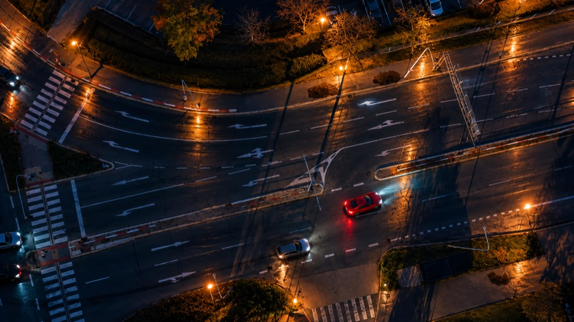
SB40a · dron: odbočka z ModřanskéVybral jsem b: auto je čitelnější a zatáčka je vidět celá
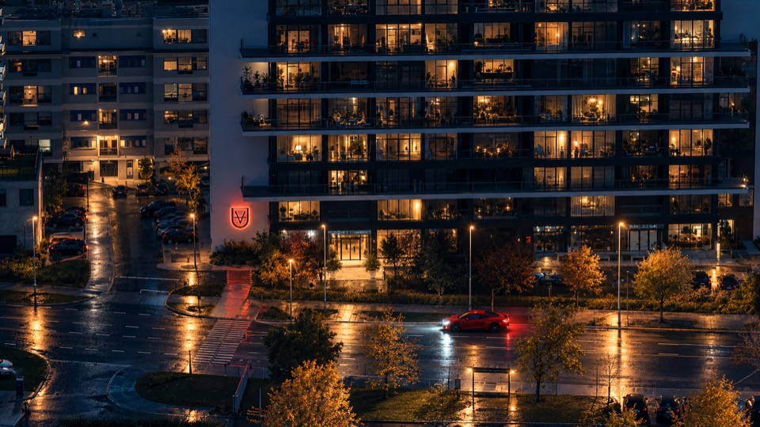
SB40b · dron přes silnici na hlavní vchodVybral jsem a: blíž, svítící V, auto jede přímo kolem vchodu
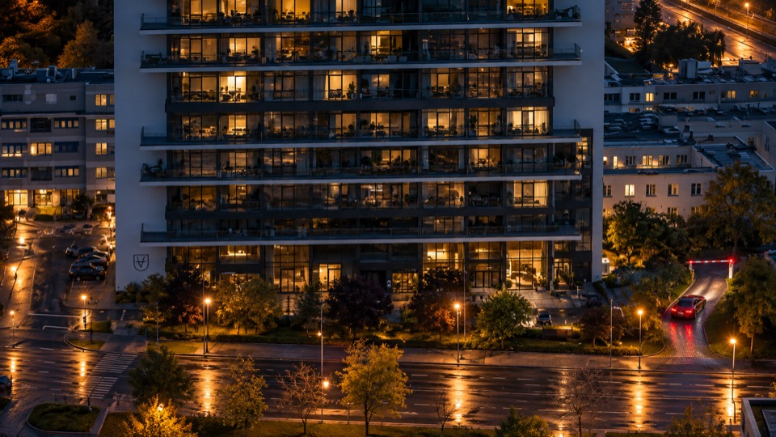
SB40c · dron: zatáčí k závořeVybral jsem b: je vidět závora a auto k ní zajíždí
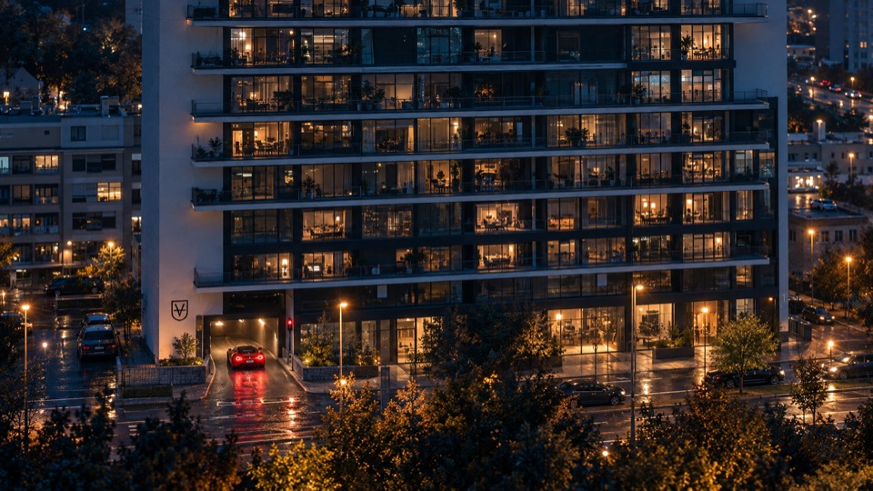
SB03 · polocelek nad stromy: vjezd do garážeVybral jsem a: dům i vjezd v obraze a auto je dost velké, aby ho AI neztratila
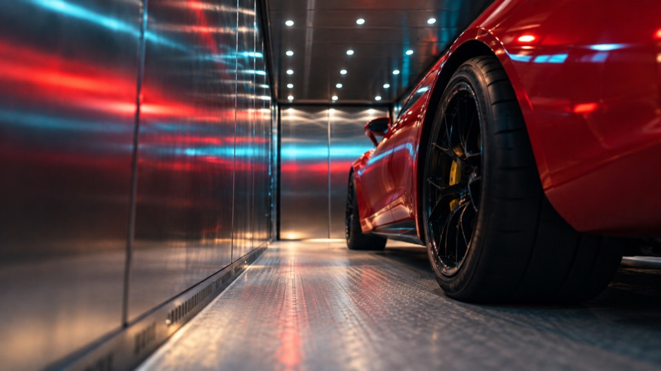
SB36d · zezadu u podlahy ve výtahu (Blender)Vybral jsem a: delší kabina, dveře na konci se otevřou do večírku (start + end frame)
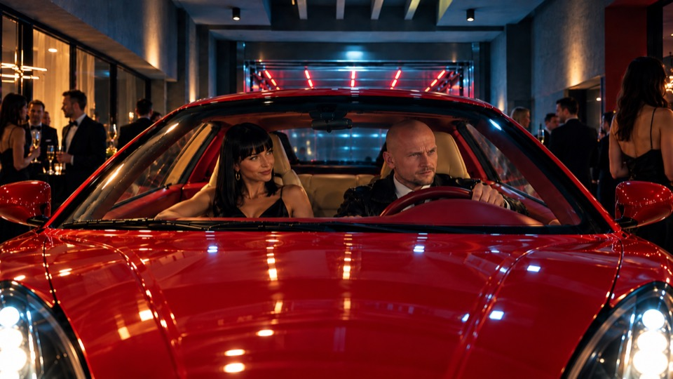
SB08 · end frame: auto mezi hostyVybral jsem b: auto popojede zhruba o 2 m, takže je jasné, že jede dopředu
Vybral jsem a: nejvyšší podoba Honzy 0,71
Vybral jsem c: podoba Honzy 0,70, balonek ve spáře ještě venku
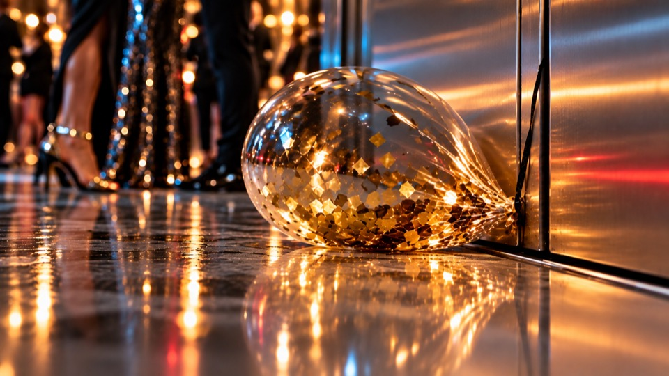
SB38 · balonek s konfetami praskneVybral jsem b: čistá podlaha, balonek nejvíc vtažený do spáry
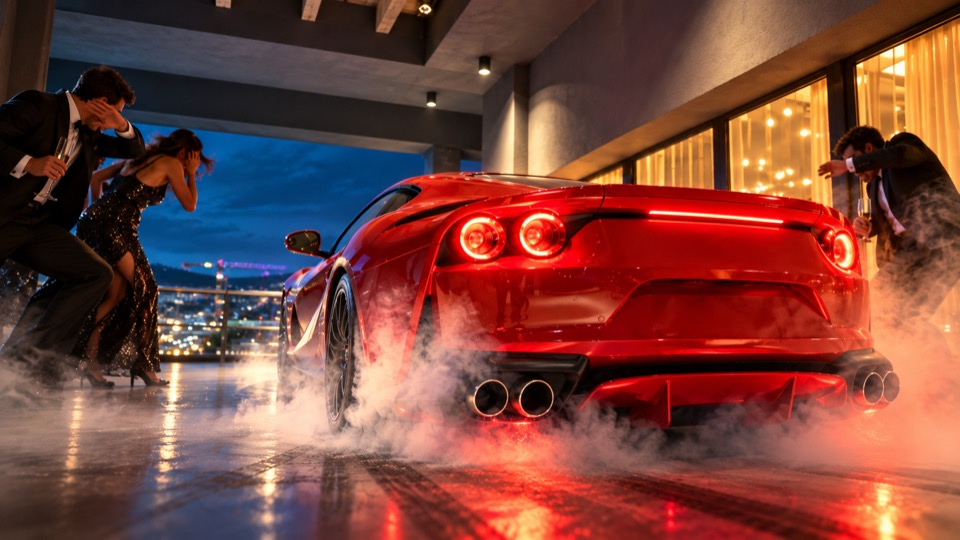
SB19 · rozjezd k terase, bližšíVybral jsem b: nejblíž a nízko, úzký otvor jako na fotce, hosté uskakují
Co je hotové
- Konec A s kinemOctavia je venku. Film na plátně běží dál, odjezd je rychlejší a plynulý, zvuk filmu v sále je tlumený.
- Příjezd podle mapySB02 → dron SB01 → Modřanská/odbočka → kolem hlavního vchodu → závora → polocelek do garáže, mezi drony detaily auta.
- Zkrácení a pořadíSB02 a SB01 prohozené, SB35 a SB04 zkrácené, SB16 vypadl, SB20 končí, než se auto zasekne.
- Nové záběrySB36 zezadu z Blenderu, SB08 se start i end framem, SB09 statický, SB11/12 s lepším Honzou, SB38 bez konfet předem, SB19 bližší s hosty.
- Řazení (SB17)Rychlý nájezd s rozmazáním na otáčkoměr, takže není vidět ručička jdoucí opačně.
- Detaily auta4 sekundové detaily ze skutečného natáčení (znak, zadní znak, kolo), jen mezi podobné záběry.
- ZvukEfekty všude (Mixkit + Pixabay, zdarma i komerčně), hlasy Honza (klon) a Vanda (Sloane), hudba od začátku, ztišení hudby pod dialogy, mastering −14 LUFS / −1 dBTP.
- KredityDnes 510 kr (29 klipů + 9 nových + testy hlasů a lip-syncu). Projekt celkem asi 791 z 1000 kr.
Co jsem rozhodl za tebe (drobnosti)
- Výběr verzí obrázkůVybral jsem a z nich udělal video (seznam výše). Když vybereš jinou, přegeneruju jen ten záběr.
- Výchozí hudba AVe střihu je A, B a C jsou vedle jako hotové verze. Vyber jednu tlačítkem.
- MluveníVanda lip-sync, Honza hlasem mimo obraz (jeho klon modely odmítly).
- DélkyDetaily auta 0,9 s, drony 2,8–3,1 s, SB11 jen 2,4 s (dál podoba Honzy klesá).
- SB02Pořád jen prvních 2,2 s (potom se auto mění). Když chceš delší, udělám end frame.
- SB14, SB15, SB23Zatím zkrácené jako minule, nové verze jsem nedělal.
Ke schválení · videa F1 z Klingu 4 (1080p)
Klipy ve střihu v2 (jednotlivě ke schválení)
Každý klip ve střihu v2 v pořadí, jak jde po sobě. Klipy jsou zkrácené tak, aby se nic nerozpadalo. U 4 problémových klipů vyber variantu opravy, nic nepřegeneruju bez tvé volby.
Klipy (náhled 720p, plné 1080p jsou v f1_ai/kling4)
1. SB02 · auto u loga V (první záběr podle Franty)problém
Honza 0.68ve střihu 0.0–2.2 s
Co je špatně: Po 2,3 s se z auta stane jiné auto (příď s maskou jako BMW). Ve střihu je zatím jen čistý začátek 2,2 s.
2. SB01 · dron, noční Modřanyv pořádku
ve střihu 0.0–3.2 s
3. SB40a · dron: odbočka z Modřanské do Čs. exiluv pořádku
ve střihu 0.3–3.2 s
4. SB40b · dron přes silnici: kolem hlavního vchodu se svítícím Vv pořádku
ve střihu 0.2–3.2 s
5. SB40c · dron: zatáčí k vjezdu za závoruv pořádku
ve střihu 0.2–3.0 s
6. SB03n · polocelek nad stromy: vjezd do garážev pořádku
ve střihu 0.3–3.4 s
7. SB35 · kolo u země v garáži, zkrácenov pořádku
ve střihu 1.0–2.4 s
8. SB04 · vjezd do výtahu, zkrácenov pořádku
ve střihu 1.2–3.2 s
9. SB06 · aplikacev pořádku
ve střihu 0.0–2.4 s
10. SB36d · zezadu u podlahy: dveře výtahu se otevírají (Blender + ChatGPT)v pořádku
ve střihu 0.4–4.0 s
11. SB08n · auto vyjede mezi hosty (start + end frame)v pořádku
ve střihu 0.0–2.6 s
12. SB09 · průhled z jídelny, statickýv pořádku
ve střihu 0.0–2.6 s
13. SBL10 · Vanda mluví (lip-sync)v pořádku
ve střihu 0.0–4.9 s
14. SB11n · „Stihneme to.“ (nový, lepší podoba)v pořádku
Honza 0.60ve střihu 0.0–2.4 s
15. SB12n · výtah se zavírá, balonek vylétá venv pořádku
Honza 0.68ve střihu 0.0–2.6 s
16. SB37 · přivřená šňůrkav pořádku
ve střihu 0.0–1.9 s
17. SB38n · balonek praskne, konfety až po prasknutív pořádku
ve střihu 0.4–3.0 s
18. SB13 · „Tak jo. Jedem.“v pořádku
Honza 0.69ve střihu 0.0–2.0 s
19. SB14 · pás + Vanda „Auta nelétají.“problém
ve střihu 0.0–1.4 s
Co je špatně: Na konci kamera najede na tvář a ta není Vandina. Ve střihu jen 1,4 s, dokud je tvář mimo obraz.
20. SB15 · oči v zrcátku + „Tohle jo.“problém
Honza 0.71ve střihu 0.0–1.3 s
Co je špatně: Při nájezdu obličej „přeroste“ rám zpětného zrcátka. Ve střihu jen 1,3 s.
21. SB17 · řazení, rychlý nájezd s rozmazánímv pořádku
ve střihu 0.0–1.5 s
22. SB18 · burnoutv pořádku
ve střihu 0.0–2.4 s
23. SB19n · rozjezd k terase (nový, bližší, s hosty)v pořádku
ve střihu 0.0–2.0 s
24. SB20 · průraz zábradlí, zpomaleně, střih než se auto zaseknev pořádku
ve střihu 0.0–2.2 s
25. SB21 · zespoduv pořádku
ve střihu 0.0–2.5 s
26. SB23 · dron u fasády, zpomaleněproblém
ve střihu 0.0–1.6 s + zpomalení a zamrznutí
Co je špatně: Auto místo „visení“ u fasády vodorovně odlétá od budovy. Ve střihu jen první 1,6 s zpomalené na 50 %.
27. SB22 · detail tváří, brutální zpomalenív pořádku
Honza 0.69ve střihu 0.0–2.4 s + zpomalení a zamrznutí
28. SB25 · kino: film běží dál, kamera odjede za Honzuv pořádku
ve střihu 0.0–5.5 s
Finální storyboard · do hard cutu
Ferrari A1 · Příjezd na večírek · film do hard cutu
26 záběrů · klipy celkem 97 s, ve střihu ~45 s (každý klip zkrátím na nejlepší 1–3 s) · Kling 4 1080p ≈ 302 kr (bez oprav). Kling 4.0 · 1080p · 3,25 kr/s · start = schválený obrázek. Seedance 2.5 až na problematické záběry po prvních pokusech a tvých komentářích. Kino, Octavia a realitní část máme v rukávu na později. Stáhnout PDF
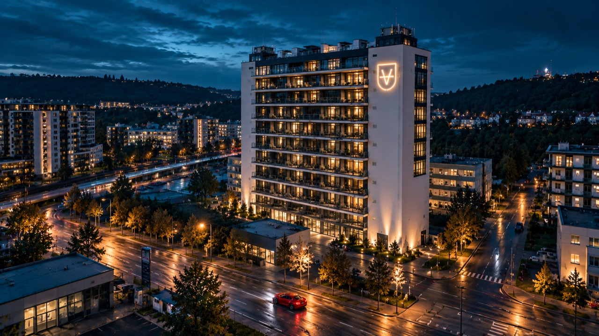
1. SB01
Noční Modřany z dronu, věž Vanguardu, po ulici přijíždí červené auto.
hotový klip Wan 3.0 (schválený)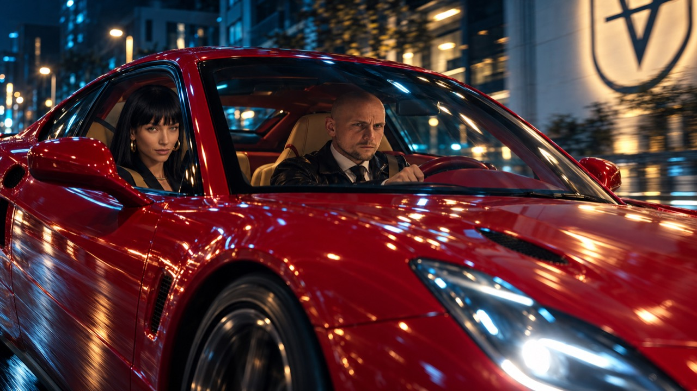
2. SB02
Nízko u chodníku: auto projíždí kolem bílé stěny s logem V, Honza řídí, Vanda vedle.
Kling 4 · 4 s · 13,0 kr · jízda souběžně s autem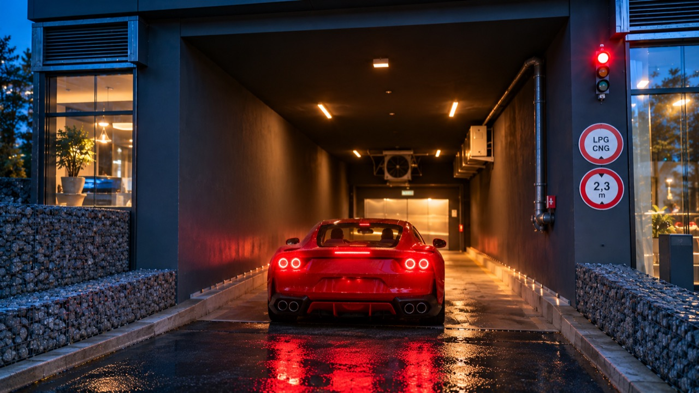
3. SB03
Auto zajíždí do skutečného vjezdu podzemní garáže Vanguardu.
Kling 4 · 4 s · 13,0 kr · statická nízká kamera
4. SB35
Detail u země: přední kolo pomalu projíždí podzemní garáží (zklidnění mezi vjezdem a výtahem).
Kling 4 · 4 s · 13,0 kr · kamera u země, pomalý průjezd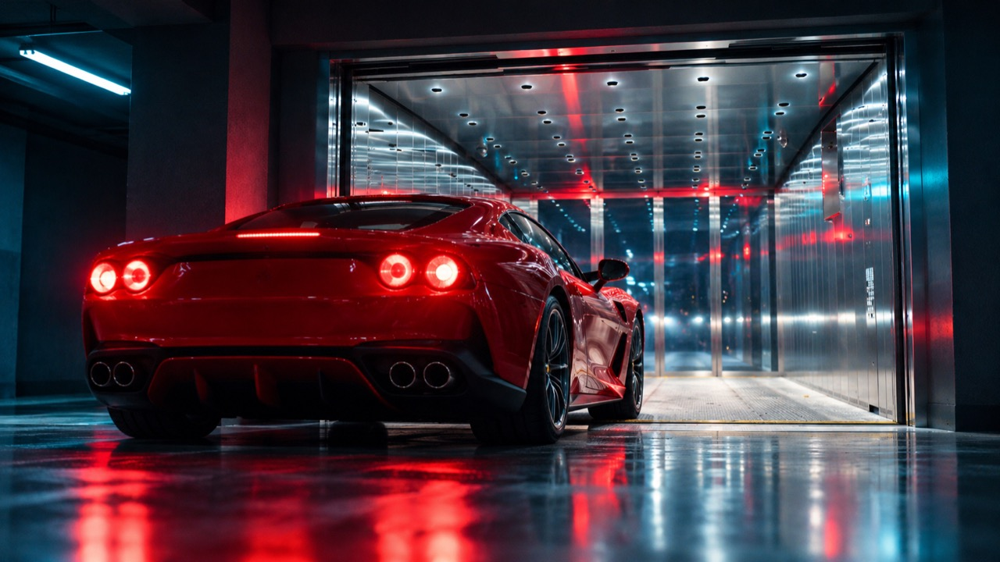
5. SB04
Auto vjíždí do otevřené kabiny autovýtahu.
Kling 4 · 4 s · 13,0 kr · statická kamera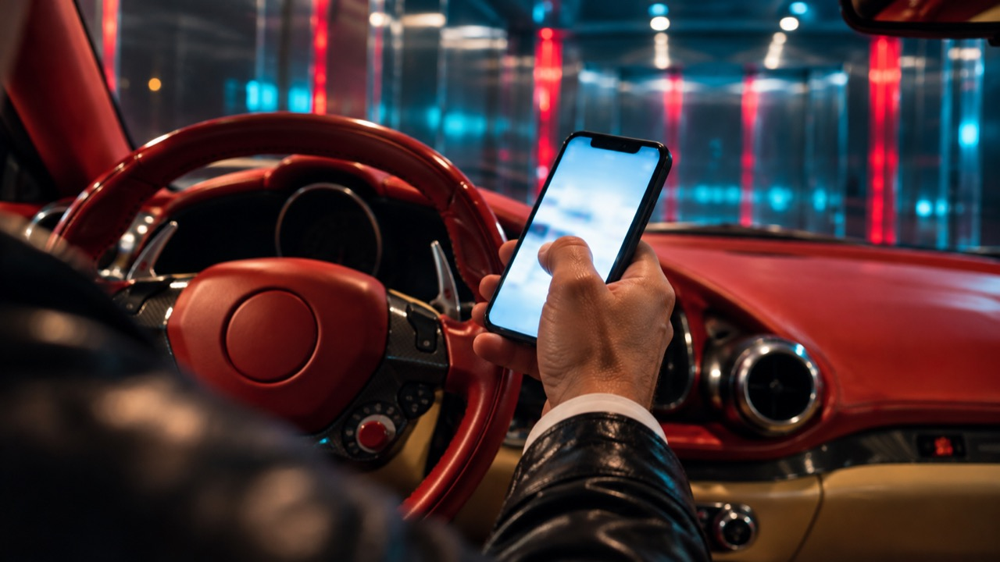
6. SB06
Detail: Honzův palec ťuká do telefonu (displej nečitelný). Titulek ve střihu: „Aplikace na ovládání výtahu“.
Titulek: „Aplikace na ovládání výtahu“
Kling 4 · 3 s · 9,75 kr · detail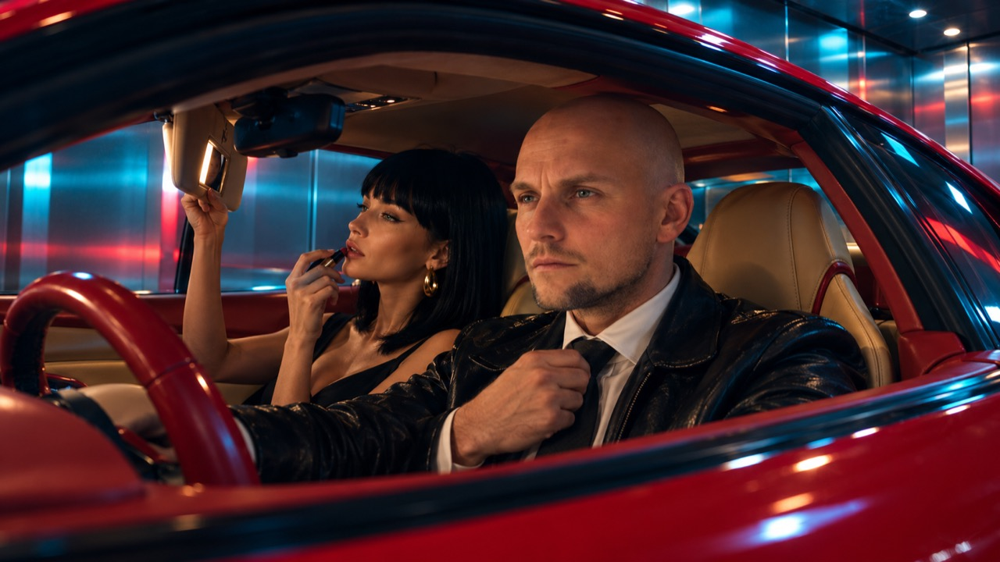
7. SB05
Výtah už jede nahoru, světelné pruhy klouzají po autě: Honza si upravuje kravatu, Vanda rtěnku.
Kling 4 · 4 s · 13,0 kr · jemný pohyb, světla klouzají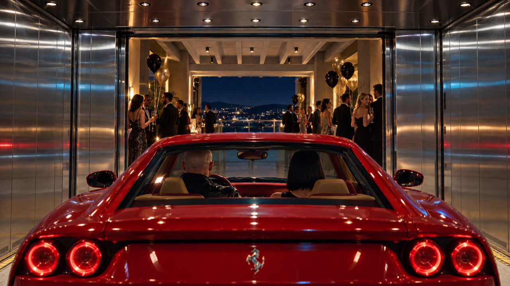
8. SB36
Dveře výtahu se otevírají do loftu (varianty: od země z boku s oběma koly / zpoza auta s výhledem ven / proti kabině).
Kling 4 · 4 s · 13,0 kr · statická nízká kamera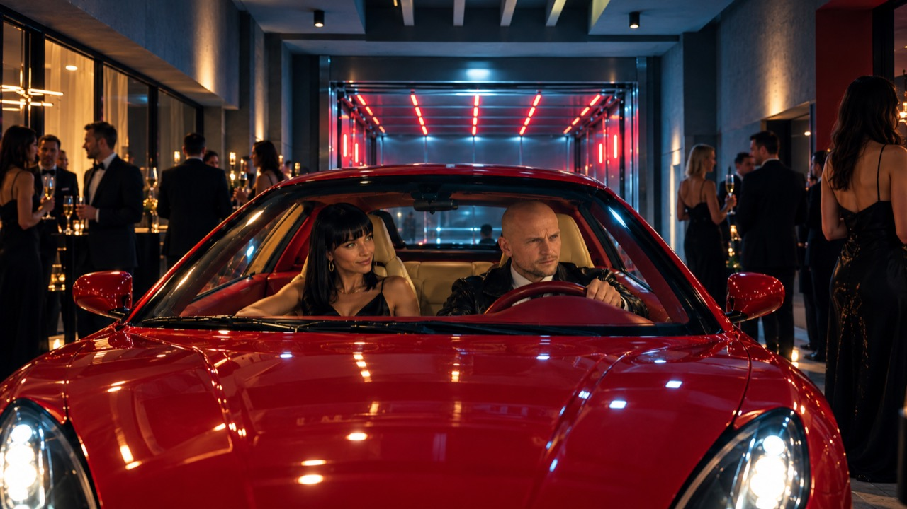
9. SB08
Auto pomalu vjíždí mezi hosty, nasvícené jako exponát.
Kling 4 · 5 s · 16,25 kr · pomalý odjezd před autem
10. SB09
Průhled z jídelny přes skleněnou stěnu na auto mezi hosty.
Kling 4 · 4 s · 13,0 kr · pomalý nájezd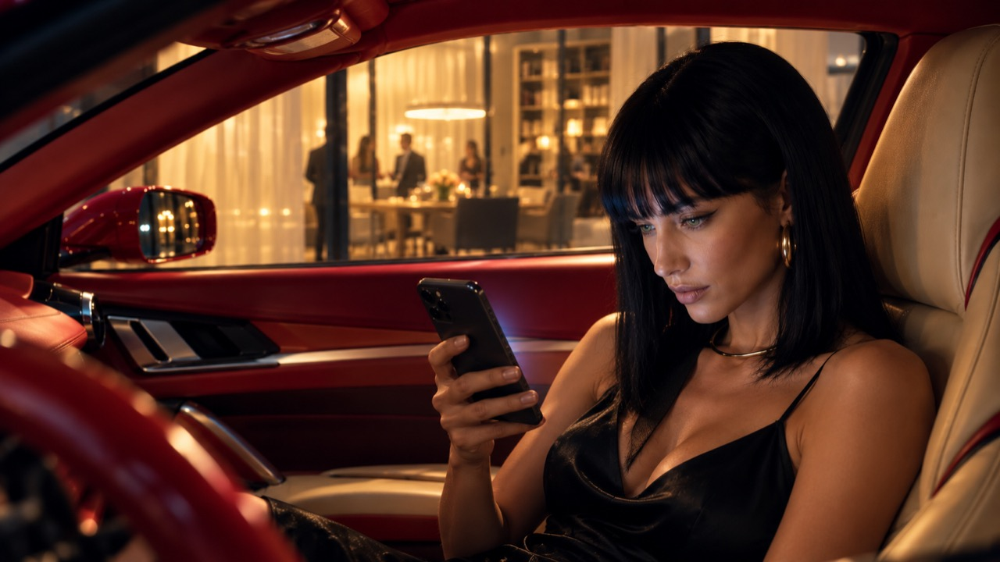
11. SB10
Vanda čte zprávu a zvedne oči k Honzovi.
Vanda: „Notář posunul podpis. V centru za deset minut, jinak to padá.“
Kling 4 · 4 s · 13,0 kr · jemný nájezd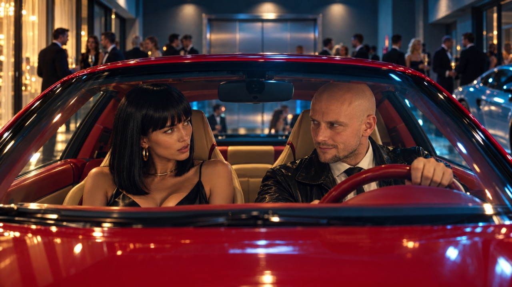
12. SB11
Kolmo přes čelní sklo: dívají se na sebe.
Honza: „Stihneme to.“
Kling 4 · 4 s · 13,0 kr · jemný nájezd
13. SB12
Dveře výtahu se zavírají s hosty uvnitř (jeden s balonkem), část hostů zůstává. Bez Porsche.
Kling 4 · 4 s · 13,0 kr · statická kamera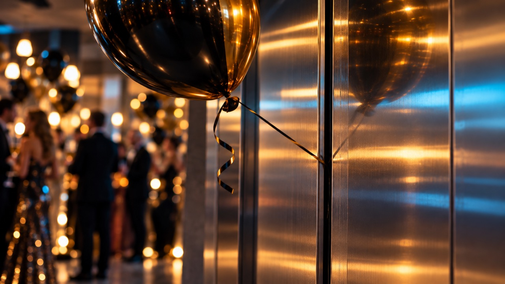
14. SB37
Detail: šňůrka balonku přivřená ve dveřích, balonek zůstal venku.
Kling 4 · 3 s · 9,75 kr · detail, statická
15. SB38
Výtah jede dolů, šňůrka stáhne balonek ke spáře a balonek praskne.
(zvuk: prásk)
Kling 4 · 3 s · 9,75 kr · detail u podlahy
16. SB13
Detail Honzy za volantem, sebevědomý pohled vpřed.
Honza: „Jedeme.“ (varianty „Tak jo. Jedem.“ / „Teď.“)
Kling 4 · 3 s · 9,75 kr · jemný nájezd17. SB14
Detail: Vandina ruka zacvakne pás.
Vanda: „Auta nelétají.“
Kling 4 · 3 s · 9,75 kr · detail18. SB15
Honzovy oči v zrcátku, za ním zavřený výtah.
Kling 4 · 3 s · 9,75 kr · téměř statické19. SB16
Honza přes čelní sklo: úšklebek.
Honza: „Tohle jo.“
Kling 4 · 3 s · 9,75 kr · nízká kamera, mírný nájezd20. SB17
Ruka na pádle, otáčkoměr v červeném poli.
Kling 4 · 3 s · 9,75 kr · makro21. SB18
Zadní kolo se protáčí, kouř, hosté uskakují.
Kling 4 · 4 s · 13,0 kr · nízko u kola22. SB19
Rozjezd k terase se zábradlím.
Kling 4 · 3 s · 9,75 kr · nízko za autem23. SB20
Zpomaleně: příď prorazí zábradlí.
Kling 4 · 5 s · 16,25 kr · slow-mo z boku24. SB21
Zespodu: auto vylétá z 9. patra, nad ním 4 patra.
Kling 4 · 4 s · 13,0 kr · slow-mo zespodu25. SB23
Dron: malé auto u fasády v 9. patře, ultra slow-mo.
Kling 4 · 4 s · 13,0 kr · téměř zamrzlé, dron se pomalu posouvá26. SB22
Detail tváří v pádu: Vanda křičí, Honza odhodlaný. Brutálně zpomalit → HARD CUT.
Kling 4 · 4 s · 13,0 kr · zpomalení až do zastaveníFerrari: kde jsme
- ✓ Scénář A1 (příjezd na večírek, podpis za 10 minut), skok z 8. patraHudba C (krimi2). Video Kling 4 v 1080p, Seedance jen náraz (SB20) a záběr těsně před dopadem (SB23).
- → Teď: schval nové verze nahořePo tvém „schváleno“ je přesunu do harmonogramu.
- Harmonogram níže = celý film v pořadíJeden obrázek na záběr. Po schválení všeho ho pustím do videogenerace.
- Pak záložka „Ferrari · 2“Hard cut („byl to jen film“) a 4 verze se zaseknutou deskou a Honzovou hláškou.
Honza ve videu
Honza: 100 % reálně, měřeno číslem
Máš pravdu, nebyl to on. Obrázky jsou z ChatGPT, jenže z jednoho dlouhého chatu se 40 obrázky, a v něm ChatGPT tváře zapomíná. Teď je měřím rozpoznáváním obličeje proti tvým fotkám Honzy (skóre 0–1):
- Skutečné fotky Honzy 0,68–0,82, schválený obrázek za volantem 0,77.Takhle vysoko musí být každý obrázek. Cíl je 0,60 a víc.
- Dosavadní scény jen 0,24–0,38, tedy nejsou Honza.Proto je předělávám: každá scéna v novém chatu, do jedné zprávy schválený Honza + 4 nejostřejší fotky tváře, a ChatGPT upraví jen obličej. Pod 0,60 jde obrázek znovu.
A jak ho udržím ve videu
- Ze schváleného obrázku, ne z Elementu.Každý klip začíná schváleným obrázkem, a kde to jde, i jím končí (Kling start + konec). Tvář je tak přibitá na obou koncích. Element dám jen jako pomocnou referenci, sám nefungoval.
- Krátké klipy, u detailů tváře malý pohyb.3–5 s, žádné otáčení hlavy z profilu do profilu, tam AI tvář ujíždí.
- Kontrola každého klipu.Stejné měření na každém 5. snímku. Klip, ve kterém Honza „ujede“, nepoužiju a nedám ho ani do 1080p.
- Mimika od skutečného Honzy.U detailů (úšklebek, „Tohle jo.“) přenesu jeho skutečnou mimiku z našich záběrů na Honzu v autě (Kling Motion Control). Výraz je pak jeho, ne vymyšlený.
- Repliky mimo obraz nebo přes rameno.AI rty nejsou potřeba, hlas je jeho klon.
Archiv: jak jsme došli ke scénáři (3 návrhy, motivace, Blender, starý multishot)
Ke schválení teď · před generováním
Ferrari: 3 návrhy scénáře
Podle tvé poznámky: Honza jede, zajede do garáže Vanguardu, vyjede výtahem nahoru do loftu a pak přijde původní pointa. Do 0:40 je to film podle Hollywoodu, pak svižná realitní část s titulky. Jen 16:9. Ke každému návrhu jsou 3 motivace, proč Honza nakonec skočí. Vybereš scénář i motivaci (můžeš je míchat, třeba B + C2). Co přesně ukáže hard cut („byl to jen film“), vymyslíme potom. Obrázky jsou zatím z hotových scén nebo skutečných fotek. Finální obrázky z ChatGPT se generují a jen tvoje volba se pak rozpohybuje.
A · Příjezd na večírek
nejblíž Rychle a zběsile 7
Jako v Abú Dhabí přijedou v obleku na večírek v penthousu. Auto tam stojí jako exponát a pryč se dá jen skokem.
- 0:00–0:06Noc v Modřanech, červené auto projede kolem bílé stěny s logem V a zatočí do vjezdu garáže. Karta „Praha-Modřany · 21:40“.
- 0:06–0:12Garáž: auto vjede do autovýtahu, dveře se zavřou. Honza si upraví kravatu, Vanda v černých šatech, ukazatel pater 4 … 13.
- 0:12–0:18Dveře se otevřou přímo do loftu, kde běží večírek. Auto vjede mezi hosty, světla ho nasvítí jako exponát (v F7 hyperauto ve vitríně).
- 0:18–0:26Vanda: „Schůzka v centru za deset minut.“ Do výtahu se nahrnou hosté a odjedou dolů. Honza otočí auto k terase. „Stihneme to.“ „Auta nelétají.“ „Tohle jo.“
- 0:26–0:36Kouř od kol, zábradlí ve zpomalení, let před dům (tvoje záběry zespodu), dopad před hlavní vchod.
- 0:36–0:40Tvrdý střih do ticha: pořád stojí v loftu mezi hosty. Vanda ťukne do aplikace: „Nebo výtahem.“ Cink.
- 0:40–1:00Realitní část: výtah, garáž, ulice. „Příště skočíme.“ „Příště zaparkuješ.“ Titulky a karta „Z obýváku do auta. Bez skoku.“
Navázání na F7: Oblek a večírek v penthousu, auto jako exponát, únik skokem, „Auta nelétají“.
Kredity F1: ≈ 430 kr (hosté na večírku navíc)
Proč skáče? Vyber motivaci
A1 · Podpis za deset minuttermín
Proč jede nahoru: Honza přiveze auto na večírek ve svém loftu: má být hlavní exponát (jako hyperauto ve vitríně v F7).
Co se stane nahoře: Vanda dostane zprávu, že notář posunul podpis velkého prodeje: „V centru za deset minut, jinak to padá.“
Proč ne výtahem: Do výtahu se mezitím nahrnulo dvacet hostů se šampaňským a displej ukazuje, že zastavuje v každém patře.
A2 · Únos vlastního autahonička jako v F7
Proč jede nahoru: Konkurenční makléř si Honzovo auto „půjčil“ jako exponát na svůj večírek. Honza a Vanda přijdou v obleku, jako by byli hosti, a jedou si pro něj.
Co se stane nahoře: Hostitel je pozná a kývne na dva bodyguardy. Ti se postaví před dveře výtahu.
Proč ne výtahem: Výtah hlídají bodyguardi, jediná cesta ven vede přes terasu. To je přesně situace Doma a Briana v Abú Dhabí.
A3 · Proslovkomedie
Proč jede nahoru: Večírek je na Honzovu počest: prodal poslední loft.
Co se stane nahoře: Hostitelka ťukne do skleničky a podává mu mikrofon: „A teď pár slov od pana Chundely!“ Honza proslovy nesnáší.
Proč ne výtahem: Před výtahem stojí všichni hosti a čekají na proslov. Honza nenápadně couvne k autu, Vanda už sedí.
B · Pomalý výtah
komedie, hrdinou je výtah
Cestou nahoru se Honza ve výtahu nudí. Nahoře zjistí, že musí hned zpátky, a čekat na výtah se mu nechce. Pointa: výtah je rychlejší, než si myslí.
- 0:00–0:05Noční jízda: odlesky světel na červené kapotě, Honzovy oči v zrcátku. Karta „21:40“.
- 0:05–0:10Vjezd do garáže Vanguardu (skutečný vjezd), auto zastaví u nerezových dveří výtahu.
- 0:10–0:16Ve výtahu hraje tichá bossa nova, Honza bubnuje prsty o volant, Vanda si dělá selfie, patra pomalu stoupají.
- 0:16–0:22Nahoře zajede auto do loftu. Vanda: „Schůzka v centru za deset minut.“ Honza se podívá na výtah, pak na terasu. „Stihneme to.“ „Auta nelétají.“ „Tohle jo.“
- 0:22–0:34Rozjezd, zábradlí, let před dům, dopad před vchod.
- 0:34–0:38Ticho, pořád stojí v loftu. Vanda: „Nebo výtahem.“
- 0:38–1:00Realitní část: svižná jízda výtahem dolů po dobách, garáž, ulice. „Za devět minut v centru.“ „Příště skočíme.“ „Příště zaparkuješ.“ Karta.
Navázání na F7: Oči v zrcátku, Honza klidný jako Dom, pohled z auta do prázdna za kapotou, „Auta nelétají“.
Kredity F1: ≈ 400 kr (nejlevnější)
Proč skáče? Vyber motivaci
B1 · Výtah právě odjeltermín
Proč jede nahoru: Cesta nahoru je nekonečná: bossa nova, Honza bubnuje do volantu. Jede domů pro Vandu.
Co se stane nahoře: Nahoře Vanda: „Schůzka v centru za deset minut.“
Proč ne výtahem: Displej ukazuje, že výtah si zrovna přivolal někdo do garáže −2. Honza čekat znovu nebude.
B2 · Sázkavýzva
Proč jede nahoru: Celou cestu nahoru si Honza stěžuje, jak je výtah pomalý.
Co se stane nahoře: Vanda se usměje: „Vsadíme se, že dolů jsem rychlejší výtahem než ty autem?“
Proč ne výtahem: Výtah je v sázce soupeř. Honza: „Stihneme to.“ Skok je jeho pokus sázku vyhrát a pointa je, že výtah vyhrál.
B3 · Západ slunceromantika
Proč jede nahoru: Ve výtahu Honza Vandě slíbí, že spolu uvidí západ slunce nad Prahou.
Co se stane nahoře: Nahoře zjistí, že slunce zapadá za tři minuty a z loftu ho nestihnou.
Proč ne výtahem: Výtahem by to nestihli. Honza otočí auto k terase a skáče přímo do západu slunce (filmová obloha, soumrak).
C · Někdo jede nahoru
napětí jako ve filmu, pointa = concierge
Jako v F7, kde hrdinům jde po krku ochranka: výtahem někdo jede nahoru a Honza nechce čekat. Nakonec je to jen concierge.
- 0:00–0:08Noc: auto přijede k Vanguardu, garáž, výtah nahoru. Rychlá filmová montáž ze 4 záběrů.
- 0:08–0:14V loftu Vanda řekne: „Schůzka v centru za deset minut.“ Ukazatel výtahu se rozsvítí, někdo jede nahoru: 7 … 9 … 11 …
- 0:14–0:20Honza nastartuje a otočí auto k terase. „Stihneme to.“ „Auta nelétají.“ „Tohle jo.“ Hudba graduje s čísly pater.
- 0:20–0:32Zábradlí, let, dopad před vchod.
- 0:32–0:38Ticho, stojí v loftu. Cink, otevřou se dveře výtahu: concierge s vyžehleným sakem a kávou na cestu. Vanda: „Nebo výtahem.“
- 0:38–1:00Realitní část: concierge podrží dveře, auto vjede do výtahu, garáž, ulice. „Příště skočíme.“ „Příště zaparkuješ.“ Karta.
Navázání na F7: Tikající hrozba (výtah místo ochranky), únik skokem, „Auta nelétají“. Prodává navíc concierge, takže se propojí s brokerským videem.
Kredity F1: ≈ 420 kr (concierge u výtahu navíc)
Proč skáče? Vyber motivaci
C1 · Ochrankahonička jako v F7
Proč jede nahoru: Honza si „vypůjčil“ vystavené auto ze vzorového loftu na projížďku a vrací se nahoru.
Co se stane nahoře: Vanda na aplikaci domu: „Ochranka jede nahoru.“ Ukazatel výtahu: 7 … 9 … 11 …
Proč ne výtahem: Výtahem jede ochranka, takže jinudy než přes terasu cesta není. Je to nejvěrnější kopie F7. Pointa: ve výtahu je jen concierge s kávou.
C2 · Tchyněkomedie
Proč jede nahoru: Honza a Vanda přijedou domů a těší se na klidný večer.
Co se stane nahoře: Aplikace pípne: „Návštěva na recepci: paní Chundelová st.“ Výtah se rozjede nahoru: 11 … 12 …
Proč ne výtahem: Výtahem jede tchyně. Honza: „Stihneme to.“ Pointa: dveře se otevřou a je to concierge s kyticí „od tchyně, nechala ji dole“.
C3 · Dvanáct klientůmakléřský vtip
Proč jede nahoru: Honza přijede do loftu, ve kterém má mít za chvíli prohlídku.
Co se stane nahoře: Vanda: „Notář v centru za deset minut. A dole na recepci čeká dvanáct klientů na prohlídku. Už jedou nahoru.“
Proč ne výtahem: Výtahem jedou klienti a Honza ví, že by ho nepustili. Pointa: concierge je provede sám a Honza v klidu sjede výtahem k notáři. Prodává concierge.
Rozpracované stilly skoku z ChatGPT (S01–S14, 3 verze)
Kokpit S01–S06 a pohled zespodu S09 drží. Opravuju: v S10 a S12–S14 se Vanda změnila v jinou ženu, v S07/S08 je za terasou smyšlené město místo Modřan, v S13/S14 má auto špatný tvar a v S11b to není Vanguard. Až to bude opravené, dám je sem k výběru.
Opraveno podle tebe
- Zábradlí, ne sklo.Skládací stěny jsou úplně otevřené, auto prorazí zábradlí terasy.
- Žádná sousední věž.Auto vyletí ven před dům a dopadne před hlavní vchod, kde stojí Honza. Na konci nic neprorazí. Okolí beru z tvých dronů a fotek zespodu.
- Záběry zespodu předělat.Tvoje záběry od chodníku nahoru na fasádu použiju jako start a AI do nich přidá letící auto. Scénárista je teď v inventáři vybírá.
- Průhled přes byt na Ferrari (nová scéna S15).Z jídelny přes posuvnou skleněnou stěnu na auto, podle fotky z brožury PSN a našich záběrů jídelny.
Loft v Blenderu: rozvržení a kamery
Hala 6,7 × 7,4 m, od terasy k výtahu 9,4 m, kalibrováno na tvoje fotky (objektiv vyšel 15 mm). Před auty otevřená terasa se zábradlím, bokem jídelna za posuvnou skleněnou stěnou, kolem věže jen nízké okolí. Kamery K1–K9 slouží ChatGPT jako rozvržení scén: K5 náraz do zábradlí, K9 průhled z jídelny. Barvy jsou jen pracovní.
Hard cut: „byl to jen film“
Co se stane hned po dopadu. Všechny varianty končí Vandiným „Nebo výtahem.“ Další 4 verze se zvukem zaseknuté desky (kvík, kvík), hollywoodským střihem a Honzovou hláškou do kamery („No… tak takhle asi ne. Ale zaujalo vás to?“) připravím, až bude hotový hlavní film.
Přechod do kina: pohyb kamery z Blenderu (animatik)
Zamrzlý detail tváří na plátně → zář na hraně plátna, obraz se rozpadne na pixely → kamera couvá a skončí za Honzou, který sedí sám v kině. Vpravo still Honzy zezadu z ChatGPT (SB25 a). Video pak Kling 4: start = plátno, konec = still.
Střih
Dvě části, dva styly střihu
A · Film (skok)
Kokpit → rozjezd → zábradlí → let → dopad před vchod → „Nebo výtahem.“ Hollywoodská pravidla: celek, polocelek, detail, protizáběry v kokpitu, střih v pohybu, zpomalení jen při nárazu, zvukový design a score s gradací. 24 fps, letterbox 2,39:1, grade jako schválené dva snímky, bez titulků.
B · Svižný real estate
Od autovýtahu dál podle tvých 7 prémiových videí: hook do 3–4 s, švih s rozmazáním na basy, střih po ~1 s, Honza jde k objektivu a je kotvou. Titulky v prostoru po slovech, klíčové slovo v akcentu, část zajíždí za Honzu. Písma Vanguardu Erode + Switzer, na konci záblesk do karty s logem.
Přechod: po „Nebo výtahem.“ ticho, černé pruhy se rozjedou do plného obrazu a nastoupí realitní tempo. Stejně to platí v brokerském videu: průlet zemí a meditace pod vodou jsou filmové, zbytek realitní.
Další volby F1
Ke schválení · Brokerské video S2 · první střih 16:9 (1:46, −14 LUFS, žádné generované video)
S2 v1: všechny skutečné záběry, efekty, vizualizace z ChatGPT, zvuk
- 0:00 TeaserJogín pod vodou (vlnění, odlesky, bubliny), červený tunel, Ferrari s rozmazanou SPZ, basové údery a cvak kliky.
- 0:03 Vstup a conciergeHonza vchází: „Všichni znáte Vanguard…“, na „Ferrari“ okno s autem, KAŽDODENNOSTI za jeho hlavou. Na drop „Concierge 24 hodin denně“, Vanda (11 b) oživená 2.5D se světelným přejezdem.
- 0:20 Dům v Blenderu13 desek vyrůstá s počítadlem, světlá výška, lofty ve 2., 6., 8. a 9. NP se rozsvítí vínově, kamera se ponoří do patra.
- 0:28 LoftyNa „volnost“ pauza hudby a salva HDR fotek. Prázdný loft se zdola nahoru zařídí, FPV let a na každé dvě doby nová ultra verze z ChatGPT („ŽIJEME jen jednou.“, „TAK PROČ NE podle sebe.“). Vzorový loft s oknem na Gaggenau a šest loftů z brožury s čipy.
- 0:58 Film„Zatím docela dobrý, ne?…“, švih dolů, černé pruhy, průlet zemí z Blenderu do bazénu, jogín vložený do skutečného záběru, Honza projde kolem.
- 1:15 Podzemí a konecBazén, kino, fitko, červený tunel se speedrampou, VYBÍRÁ VÁS za hlavou, „Pojďte…“, logo světlem, záblesk a karta.
Zatím náhrada: Michal za pultem (výměna za Vandu jde jen AI videem), „Žijeme jen jednou“ bez hlasového klonu (jen titulek), jogín neotevře oko, proměna loftu běží bez Honzy (kamera panoruje). Placené AI video by stálo odhadem ~310 kr (Vanda ~107, průlet zemí ~132, jogín oko 15–22, hlas 1). Nic se negenerovalo.
Ultra vizualizace loftu z ChatGPT (4)
Plná kvalita: _02PODKLADY/s2_strih/S2_v1_16x9.mp4 · osa záběrů: S2_v1_poznamky.md
Ke schválení · storyboard brokerského videa
„Žijeme jen jednou“ v obrázcích (39 záběrů, 1:46)
27 natočených záběrů (snímek z materiálu), 8 AI záběrů z ChatGPT (u nich vyber verzi) a grafika. Jogín pod vodou je v záběru malý, proto má podobu Honzy kolem 0,55. Detail jogína (25 b) má 0,64. Napiš poznámky ke kterémukoli záběru do chatu nebo sem.
01AI · vyber verzi
0:00,0–0:00,7 · kompozit P1181910 @7,0 + S2-AI-19 (Kling ze stillu S2-AI-18)Teaser: Honza medituje pod vodou za sklem bazénu (kompozit na P1181910, jogín z S2-AI-18/19)
titulek vlevo dole přes H1–H3: „Vanguard Prague“ (Erode Light) + „PRAHA 12 · MODŘANY“ (Switzer caps); basový úder
02natočené
0:00,7–0:01,4 · cam1 P1181900 7,3–7,65 (50p → 50 %)Teaser: míjení v červeném tunelu
(titulek drží) · basový úder
03natočené
0:01,4–0:02,1 · cam2 P1120120 0,0–0,35 (50p → 50 %)Teaser: červené auto v loftu v noci
(titulek drží) · basový úder
grafika
04grafika
0:02,1–0:02,3 · černá + SFXČerná, cvak kliky (foley 0:02,2), tvrdý střih
—
05natočené
0:02,3–0:03,8 · cam1 P1181916 39,8–41,3Noční předsíň, Honza u skleněných dveří, ruka na klice, pohled do objektivu
malé logo Vanguard vlevo dole · hudba C od 0:02,7
12
06natočené
0:03,8–0:07,2 · cam1 P1181916 41,3–44,7 + okno cam2 P1120120 0,0–0,45 (50 %)Honza otevírá dveře: „Všichni znáte Vanguard…“; na „Ferrari“ okno 40 % s autem v loftu
„Všichni znáte Vanguard jako projekt, kde máte v obýváku Ferrari.“
07natočené
0:07,2–0:09,5 · cam1 P1181916 44,7–47,0Honza jde halou k bílému pultu; titulek „o každodennosti“ za Honzou
„Ale pro mě je to o té každodennosti.“
08AI · vyber verzi
0:09,5–0:11,7 · cam1 P1181916 47,0–49,2 (vzor still @47,0) + S2-AI-01Za pultem Vanda místo Michala podává Honzovi černou tašku
„Přijdete domů a nemusíte nic řešit.“
Vanda musí být za pultem už od prvního snímku (ne proměna v záběru). Postup: plate P1181916 47,0–49,2 nejdřív pořádně nabarvit (V-Log → Rec.709, vyvážit), pak výměna Michala za Vandu přes Higgsfield Genjutsu (nahrazení postavy s referencemi Vandy) nebo Kling O1 edit. Generuje se až po schválení.
09natočené
0:11,7–0:13,9 · cam1 P1181916 49,2–51,4Honza s taškou odchází podél pultu; drop hudby + titulek concierge
titulek „Concierge 24 hodin denně“ (Erode Light) + „LOBBY · RECEPCE“ (Switzer caps) na dropu 0:11,7
10natočené
0:13,9–0:15,4 · cam2 P1120093 2,0–2,75 (50p → 50 %)Svítící nápis „recepce“ za soumraku
—
11AI · vyber verzi
0:15,4–0:17,8 · S2-AI-02 (still, ChatGPT) → S2-AI-03 (Kling start frame)Vanda za pultem posune balíček k divákovi; vedle karta služeb
karta služeb: 3 kroužky s vodicími čarami → „RECEPCE 24/7“ (pult), „LOUNGE“ (křesla), „LABORATORIO“ (směr ke dveřím); štítek VIZUALIZACE
12natočené
0:17,8–0:19,3 · cam2 P1120012 4,0–5,5 (50p)Lounge v hale: karafy a suchá tráva na polici, pomalá jízda
—
13natočené
0:19,3–0:21,3 · cam1 P1181916 52,2–54,2Honza se otočí a jde s taškou ke kameře; na konci tvrdý střih do tmy
—
grafika
14grafika
0:21,3–0:27,3 · Fusion 3D / AE, předloha model domu z brožury Hotové lofty str. 3Motion grafika domu: z tmy vyrůstá 13 desek pater (krémové linky, izometrie), jedna se rozsvítí vínově, ponor kamery do desky, radiální rozmazání
„13 nadzemních podlaží“ (Erode Light) → „SVĚTLÁ VÝŠKA 3,15–4,4 M“ (Switzer caps)
15natočené
0:27,3–0:30,3 · cam1 P1181634 2,05–5,05 (50p)Kotva: Honza jde od oken prázdným betonovým loftem k objektivu, kamera couvá (digitální odjezd 108 → 100 %)
„…pro lidi, kteří milují volnost.“ · titulek „PRO LIDI, KTEŘÍ MILUJÍ“ + „volnost.“ za Honzovou hlavou
123
16natočené
0:30,3–0:33,95 · ① foto P1181677 (HDR z 675–677; náhled 0 EV P1181675, 2.5D nájezd) · ② cam1 P1181636 5,5–6Salva 3 × 2 doby: HDR foto slunce po podlaze · nájezd ke sloupu a oknu · bílá zeď z tvárnic
bez hlasu, bez titulků · švih na návrat basů 0:30,3
17AI · vyber verzi
0:33,95–0:38,15 · cam1 P1181632 7,4–11,6 (50p) + AI S2-AI-05 (start P1181628 @0:09, end S2-AI-04)Proměna v jednom záběru: Honza vejde do prázdného loftu a kolem něj se zařídí; pozadí = AI proměna P1181628 → zařízený
„Chtějí si vytvořit vlastní prostor a nechtějí se vejít do běžné dispozice.“ · titulek „VLASTNÍ“ + „prostor“; štítek VIZUALIZACE od 0:36,5
18AI · vyber verzi
0:38,15–0:42,25 · AI S2-AI-21: start = foto P1181639 (HDR z 639–641, náhled 0 EV)FPV průlet betonovým skeletem, na konci roll a radiální vír
VO klon Honzy: „Žijeme jen jednou. Tak proč si nevytvořit prostor opravdu podle sebe?“ · titulek „ŽIJEME“ + „jen jednou.“ pevně v rámu
12
19natočené
0:42,25–0:48,15 · cam1 P1181742 45,10–51,0 (50p) + okno cam2 P1120069 2,0–3,0Vzorový loft s obrazem masek, Honza vzadu u okna; okno 80 % s detailem trouby Gaggenau
„…pro lidi, kteří chtějí hotový designový byt, promyšlený interiér, kam přijdou a řeknou: jo, to je přesně ono.“ · titulek „HOTOVÝ DESIGNOVÝ“ + „byt“
123456
20natočené
0:48,15–0:55,4 · brožura Hotové lofty str. 4, 7, 10, 13, 16, 19 (pdfimages, vzor 16:9 výřez ze středu)Šest hotových loftů z brožury, 2.5D paralaxa (6 × 2 doby)
čipy: VG206 · 2. NP · MICHAELA ZÁHOROVSKÁ / VG605 · 6. NP · OOOOX / VG602 · 6. NP · IVANKA KOWALSKI / VG803 · 8. NP · STOPKA × POLIFORM / VG903 · 9. NP · SKULL STUDIO / VG952 · 9. NP · MICHAELA ZÁHOROVSKÁ
21natočené
0:55,4–1:00,9 · cam1 P1181756 6,1–11,6 (25p)Modrá hodina, svítící štít loga, Honza vychází od vchodu ke kameře; na „dole“ sklopení dolů
„Zatím docela dobrý, ne? Ale možná to hlavní, proč Vanguard, je tady dole pod náma.“
22natočené
1:00,9–1:01,2 · cam1 P1181756 11,6–11,9 + digitální švih dolůRozmazaný švih na dlažbu; zajedou černé pruhy 2,39:1 = začátek FILMOVÉ pasáže
hudba se utne, whoosh dolů
23AI · vyber verzi
1:01,2–1:06,9 · S2-AI-12 hero: start = still dlažby shora, end = S2-AI-18 (S2_24)FILM: jeden souvislý pohyb dolů zemí (dlažba → kabely a trubky → beton) do haly s bazénem, přistane v záběru Honzy u skla s jogínem pod vodou
v obraze nic, štítek „ILUSTRACE“ v černém pruhu; zvukový design (rumble, sub-bass, riser)
24AI · vyber verzi
1:06,9–1:11,2 · cam1 P1181910 7,0–10,4 (stativ, 25p) + kompozit S2-AI-19 (Kling ze stillu S2-AI-18)FILM, celek: Honza jde podél skleněné stěny bazénu, v 10,0 s pohlédne na sklo; za sklem pod vodou medituje jogín Honza a otevře oko
— (ticho vody, bloop bublina)
25AI · vyber verzi
1:11,2–1:12,2 · S2-AI-20: ChatGPT still + Kling 3.0FILM, protizáběr: dvojník pod vodou otevře oko k Honzovi a nepatrně se usměje
— (návrat beatu na mrknutí)
26natočené
1:12,2–1:13,2 · cam1 P1181910 10,4–11,4FILM, zpět na celek: Honza jde dál a projde těsně u objektivu (stíračka tělem), končí letterbox
kroky, groove
27natočené
1:13,2–1:14,6 · cam1 P1181913 13,0–14,4 (gimbal, 25p)Jízda podél skla a nad hladinou bazénu, zlatý strop
titulek „Bazén 18 m“ + „V BÝVALÉM KRYTU“
28natočené
1:14,6–1:16,0 · cam1 P1181898 8,6–10,0 (50p)Kino: Honza u stroje na popcorn se usměje do kamery
titulek „Privátní kino“ + „4K A DOLBY ATMOS“
29natočené
1:16,0–1:17,2 · cam1 P1181899 5,6–6,8Honza leží s popcornem, nohy nahoře
—
30natočené
1:17,2–1:18,8 · cam1 P1181907 1,5–3,1 (stativ)Fitko: Honza visí hlavou dolů, neon YOU CAN
titulek „Fitness“ + „JEN PRO REZIDENTY“
31natočené
1:18,8–1:19,7 · cam2 P1120131 1,0–1,9Neon YOU CAN detail
—
32natočené
1:19,7–1:21,1 · cam1 P1181902 2,0–3,4 (50p)Prázdný červený tunel, nájezd (napětí před vrcholem)
riser
33natočené
1:21,1–1:26,7 · cam1 P1181900 5,0–9,3 (50p)SUPER ZÁBĚR: Honza a kamera proti sobě v červeném tunelu, míjení přes rameno v 8,0 s zdroje, rampa 100 → 40 → 240 %
návrat beatu přesně na začátek záběru
grafika
34grafika
1:26,7–1:26,8 · zábleskBílo-zlatý záblesk 2 snímky (tma tunelu → slunce)
—
35natočené
1:26,8–1:33,6 · cam1 P1181687 0,8–7,6 (50p)Střešní terasa, zlatá hodina, Honza jde od zábradlí k objektivu, končí úsměvem
„Možná si Vanguard nevybíráte vy, možná si Vanguard vybírá vás.“
36natočené
1:33,6–1:35,0 · cam2 P1120052 0,5–1,9 (50p, bez zvuku)Slunce přes drátěné zábradlí, flare (změna ostrosti)
—
37natočené
1:35,0–1:38,5 · cam2 P1120043 1,8–5,3Honza u zábradlí, výhled na údolí
„Víte co? Pojďte si to tady s náma projít a prožít.“
38natočené
1:38,5–1:41,0 · cam1 P1181730 0,5–3,0 (25p)Celek terasy, slunce nízko; logo se vykreslí světlem
logo Vanguard (krém) vykreslené světlem
grafika
39grafika
1:41,0–1:46,0 · koncová kartaKoncová karta (Inkoust #12100E): vlevo logo Vanguard Prague, tenká linka, vpravo Jan Chundela
„Prohlídku s Vámi projde Jan Chundela.“ · „+420 773 998 265 · jan@chundelareality.cz“ · „vanguardprague.cz“
Brokerské video „Žijeme jen jednou“
Volby
Vanda: vyber jednu
Recepční a concierge Vanguardu. Michala na recepci vyměním za ni, sedí i vedle Honzy ve Ferrari. Vybranou udělám z více úhlů a uložím jako Element.
Vanda A z více úhlů · uložená jako Element „Vanda-Vanguard“
Podle těchto pohledů ji AI drží stejnou ve všech záběrech: recepce v černém saku, ve Ferrari ve večerních šatech.
Hlasy: vyber Vandin hlas
ElevenLabs v Higgsfieldu, česky, stejný text. Pod tím Honzův naklonovaný hlas na větě „Žijeme jen jednou“, kterou jsme na place nenatočili.
Vesper
Sloane
Elena
Zkomolila „Auta nelétají“, opravilo by se.
Ginger
Tvůj tip.
Sienna
Tvůj tip.
Honza, klon hlasu
Ke schválení · ONE reel v5 · tři varianty podle tvých připomínek k v4 (9:16, 0 kr, vizualizace z ChatGPT)
iPhone reel v5: A Premium MAX · B One-shot · C Noc a podzemí
Nápisy za Honzou jsou přes celé plochy, titulky mají nové elegantní písmo, „Jedna je / Druhá je“ je vystřižené. Přibyly speedrampy z podzemí, luxusní vizualizace a noc. Co se změnilo proti v4, je na A4 dole.
A · Premium MAX
59 s · hudba noir → techno
- Všechno z Učebny: vzory přes celé plochy (nebe, podlaha, záclona, pult, sklo), klíčové slovo může zajet za Honzu.
- Švihy, nárazy a zdušení hudby před dropem. Logo na věži s výbuchem, okno 80 % s Ferrari.
- Podzemí na beat se speedrampou (tunel, bazén, fitko, Ferrari). Prázdný loft se světlem promění v luxusní vizualizaci.
- Konec: věž ve dne a na úder v noci, pak karta.
B · One-shot
42 s · hudba „harrak“
- Souvislý průchod z iPhonu, chůze zrychlená, Honza mluví živě („Pojďme!“, „Strop, sádrokarton není…“, „Tak, terasa.“, „Jih, západ… Vanguard!“).
- Nesmysly vystřižené, u záchodu a u „Nevím.“ zamrznutí se škrábnutím desky a nálepkou („PROVĚŘENO makléřem“, „my to víme: Vanguard“).
- „Lukáš?“ jako vtip, ZÁPAD a VANGUARD v prostoru.
C · Noc a podzemí
33 s · hudba „top estet“
- Hook v červeném tunelu („Možná si Vanguard…“), drop na noční věž s rozsvíceným logem, neonové V.
- Bazén, fitko, kino, Ferrari a podlaží −1, hala s Honzou a NIC NEŘEŠIT na pultu.
- Roh loftu se promění v luxusní vizualizaci, noc nad městem a „Vanguard!“.
Vizualizace a noc z ChatGPT (7 stillů)
A4: co se změnilo proti v4 (před / po)
Ke schválení · ONE reel v4 · podle tvých připomínek k v3 (9:16, 54 s, 0 kr)
iPhone reel v4: nové titulky slovo po slovu, vypimpené logo, PŘESNĚ ONO přes celou záclonu
Všechny body z tvé zprávy jsou zapracované. Co se změnilo proti v3, je na A4 pod videem (snímek před a po u každé připomínky).
- TitulkyNový styl: velké bílé písmo, celá fráze uprostřed. Slova se rozsvěcují přesně podle Honzovy řeči, klíčová slova (Vanguard, prožít, přesně ono, volnost, Ferrari…) dostanou vínový pruh. Titulek drží celou dobu, co Honza mluví, a na světlém pozadí ho podrží tenký obrys a stín.
- 0:09 LogoSekaný oblet je pryč. Místo dvou podobných dronů je jeden delší plynulý záběr na logo. Logo je trackované na fasádě: světlo ho vykreslí po tazích, na kopák (0:09,6) vybuchne se zábleskem, tlakovou vlnou a jiskrami, fasáda se ponoří do tmy a logo svítí. Na tlesknutí (0:10,3) přijde druhý puls s ozvěnou loga, pak švih do interiéru. Zvuk výbuchu a jisker.
- 0:16 Přesně onoPŘESNĚ ONO je přes celou záclonu až dolů. Kytka, police i Honza zůstávají před nápisem.
- 0:50 KonecKoncový nálet na logo je plynulejší (snímky se prolínají, už nesekají).
- Beze změnyHudba, řeč, délka 54 s a všechny ostatní záběry a nápisy jsou stejné jako ve v3. Celkem 0 kr.
Plná kvalita: _02PODKLADY/one_strih/ONE_v4_9x16.mp4 · A4 před/po: ONE_v4_zmeny_A4.pdf. Verze v3 je níž.
A4: co se změnilo proti v3 (před / po)
Ke schválení · ONE reel v3 · podle tvých připomínek k v2 (9:16, 54 s, 0 kr)
iPhone reel v3: víc řeči, drony, víc maskovaných nápisů, nová hudba
Všechny body z tvé zprávy jsou zapracované. Co se změnilo proti v2, je na A4 pod videem (snímek před a po u každé připomínky).
- 0:00 Hook„Možná si Vanguard nevybíráte vy, možná si Vanguard vybírá vás.“ Hlasy štábu jsou pryč (izolace hlasu). Za Honzou je na nebi vylepšený 3D vzor VANGUARD se světelným přejezdem.
- 0:05 PojďteOstrý take P1120039, Honza ukazuje do kamery. Za ním v lese vyjede PROŽÍT.
- 0:08 Drop a dronyNa drop hudby jdou tři drony na výšku (přílet k věži, oblet a logo VANGUARD), potom švih do iPhone one-shotu.
- 0:13 Zařízený loft„Jedna je pro lidi… jo, to je přesně ono.“ Na závěsech je PŘESNĚ ONO s lepším trackingem.
- 0:20 VolnostDron nad Vltavou a za kopci vyjede VOLNOST, pak prázdný loft s VOLNOST na podlaze (tracking v plném snímku).
- 0:28 Hala„Všichni znáte Vanguard… v obýváku Ferrari“ s prostřihem na Ferrari (zvuk motoru). Honza už není roztažený. Na černé stěně za recepcí se objeví NIC NEŘEŠIT.
- 0:36 Terasa a křesloHonza živě mluví: „jih, západ“ (na nebi ZÁPAD, kam ukazuje), „křeslo“ a „Vanguard!“ s rukama nahoře, za ním VANGUARD na skle.
- 0:50 KonecNálet na logo na věži, záblesk a karta s logem: Lofty Vanguard, Jan Chundela · +420 773 998 265, vanguardprague.cz.
- Hudba a zvukNová hudba z FD knihovny, „Noir → techno“ (44dfe779). Pod hookem jde tajemný jazz, na „Pojďte“ se rozjede, drop přijde na drony a poslední úder skladby na kartu. Řeč prošla izolací hlasu, k tomu boom, švihy a popy u vzorů, master −14 LUFS. Celkem 54 s, 0 kr.
Plná kvalita: _02PODKLADY/one_strih/ONE_v3_9x16.mp4 · A4 před/po: ONE_v3_zmeny_A4.pdf. Verze v2 a v1 jsou níž.
A4: co se změnilo proti v2 (před / po)
iPhone one-shot reel
Volby
Ke schválení · Matrix stilly · vedle každého záběru tvůj schválený still, nové varianty, 0 kr
Matrix: Honza z pevného listu postavy, skutečná místa – vyber A / B / C
Schválené stilly: vlevo vždy to, co jsi vybral dřív (M1) – označ „♥ Líbí se mi“ u těch, které se ti líbily, a nové verze budu držet co nejblíž k nim. Vpravo nové varianty: Honza ze schváleného vzoru + archu skutečných fotek (stejně jako Vanda), prostředí ze skutečných fotek a Blenderu, dveře krytu skutečné rezavé. M16 (kád) je podle tebe vyřazený. Klikni na obrázek pro plné rozlišení.
M01 M3 (bez Honzovy tváře, beze změny) · Lounge v noci, Vanda čeká v křesle
← přejeď prstem na další variantu · klepnutím zvětšíš →
M02 · Honza vchází z chodby
← přejeď prstem na další variantu · klepnutím zvětšíš →
M03 M3 (bez Honzovy tváře, beze změny) · Dlaně s náramky (Honzův pohled)
← přejeď prstem na další variantu · klepnutím zvětšíš →
M04 · Odraz Honzy v brýlích
← přejeď prstem na další variantu · klepnutím zvětšíš →
M05 · Honza bere červený náramek
← přejeď prstem na další variantu · klepnutím zvětšíš →
M06 M3 (bez Honzovy tváře, beze změny) · Sestup po schodech do krytu
← přejeď prstem na další variantu · klepnutím zvětšíš →
M07 · Rudý tunel proti kameře
← přejeď prstem na další variantu · klepnutím zvětšíš →
M08 M3 (bez Honzovy tváře, beze změny) · Boty a lemy kabátů v tunelu
← přejeď prstem na další variantu · klepnutím zvětšíš →
M09 M3 (bez Honzovy tváře, beze změny) · Skutečné rezavé dveře krytu, zavřené
← přejeď prstem na další variantu · klepnutím zvětšíš →
M10 M3 (bez Honzovy tváře, beze změny) · Dveře se otevírají, zlaté světlo a pára
← přejeď prstem na další variantu · klepnutím zvětšíš →
M11 · Honza na kraji bazénu pod zlatým stropem, chystá se ke skoku
← přejeď prstem na další variantu · klepnutím zvětšíš →
M12 M3 (bez Honzovy tváře, beze změny) · Vanda u bazénu s brýlemi v ruce
← přejeď prstem na další variantu · klepnutím zvětšíš →
M13 · Skok, bullet time
← přejeď prstem na další variantu · klepnutím zvětšíš →
M14 udělám z vybrané M13 · Konec obletu skoku (z vybrané varianty M13)
← přejeď prstem na další variantu · klepnutím zvětšíš →
M15 M3 (bez Honzovy tváře, beze změny) · Sauna na střeše, Vandina ruka s naběračkou
← přejeď prstem na další variantu · klepnutím zvětšíš →
M17 M3 (bez Honzovy tváře, beze změny) · Vířivka v alkovu (není jisté, že tam je)
← přejeď prstem na další variantu · klepnutím zvětšíš →
M18 · Čtečka obličeje se zeleným skenem
← přejeď prstem na další variantu · klepnutím zvětšíš →
M19 M3 (bez Honzovy tváře, beze změny) · Vanda nabízí modrý náramek
← přejeď prstem na další variantu · klepnutím zvětšíš →
M20 · Honza v bazénu, kabát na lehátku
← přejeď prstem na další variantu · klepnutím zvětšíš →
Ke schválení · Matrix „Červená, nebo modrá“ · stilly z ChatGPT (20/20) · klipy Kling 4 hotové
Matrix: storyboard ve stillech
Matrix se nenatáčel, takže je celý z AI: 20 záběrů po 2 verzích, Honza v dlouhém kabátě, Vanda jako Morpheus, místa podle skutečných záběrů krytu, tunelu a bazénu. Podle tvého výběru verzí jsou hotové klipy Kling 4 (1080p, 3–5 s, celkem 214 kr), jsou pod každým záběrem. Napiš ke klipu, co předělat. Pak z nich střihnu Matrix. ★ = moje doporučení. Video v Klingu až po tvém schválení.
Klip Kling 4 · 3 s
M011 Lounge
Široký záběr: noční lounge Vanguardu, po velkém skle stéká déšť, za ním rozmazaná světla města. Vanda sedí v hlubokém křesle jako Morpheus, nohy přes sebe, kabát, kulaté brýle, čeká. Prázdné křeslo naproti.
★ Claude: Obě dobré, a ukáže víc lounge a prázdné křeslo naproti.
Klip Kling 4 · 4 s
M021
Honza v dlouhém kabátě vchází z tmavé chodby do lounge, kapky deště na ramenou, váhavý pohled na Vandu. Kamera nízko za Vandiným křeslem.
★ Claude: V a je Honza moc malý, v b je čitelný a Vanda v popředí.
Klip Kling 4 · 3 s
M031
Detail: Vandiny otevřené dlaně natažené ke kameře, v levé **modrý** náramek, v pravé **červený** (jednoduché korálkové / kožené náramky), za nimi rozostřený Honza.
★ Claude: Jen v b jdou poznat barvy náramků (korálkové jako M05). V klipu se náramky ke konci mění, ve střihu použiju jen první 1,5 s.
Klip Kling 4 · 3 s
M041
Extrémní detail Vandiných kulatých černých brýlí, v každém skle odraz Honzy, který zvažuje volbu (pocta Matrix). Kapky deště za ní rozostřené.
★ Claude: V b je Honza v obou sklech jasně, v a jsou odrazy menší a dvě postavy.
Klip Kling 4 · 3 s
M051
Detail: Honzova ruka sahá po **červeném** náramku ve Vandině dlani, modrý zůstává. Dramatické boční světlo.
★ Claude: Obě sedí, b má ostřejší korálky.
Klip Kling 4 · 4 s
M062 Sestup
Shora: Honza a Vanda zezadu sestupují po betonových schodech do krytu v **rudém** neonovém světle, kabáty vlají.
★ Claude: b je shora jako ve scénáři, a je zezadu z výšky očí.
Klip Kling 4 · 4 s
M073 Tunel
Oba kráčejí zpomaleně proti kameře nekonečným rudým neonovým tunelem s hlubokými rámy, kabáty vlají, sebevědomě. Kamera nízko.
★ Claude: b ukáže tváře, a je širší úvod tunelu, obě použitelné.
Klip Kling 4 · 3 s
M083
Nízký detail: boty a lemy kabátů krokují po mokré podlaze tunelu, v loužích odraz rudého neonu.
★ Claude: b má víc šplíchanců z louží.
Klip Kling 4 · 3 s
M094 Dveře
Na konci tunelu masivní kruhové **čtyřtunové ocelové dveře protiatomového krytu z roku 1984** (kolo, nýty, rudé světlo). Honza a Vanda stojí před nimi zezadu, malí proti dveřím.
★ Claude: a má dveře celé a postavy větší.
Klip Kling 4 · 5 s
M104
Dveře krytu se otevírají: zpoza nich se valí pára a **zlaté světlo**, siluety Honzy a Vandy v protisvětle.
★ Claude: a má silnější zlaté protisvětlo.
Klip Kling 4 · 4 s
M115 Nebe
Bazén pod zlatým reliéfním stropem září jako nebe, nad hladinou se vznáší pára, modrozelená voda svítí. Honza v kabátě stojí na kraji bazénu a žasne („Takže jsem v nebi?“).
★ Claude: a: Honza žasne nahoru ke stropu, b je široký celek.
Klip Kling 4 · 3 s
M125
Střední záběr Vandy u bazénu ve zlatém světle, brýle v ruce, klidný úsměv („Ne. Ve Vanguardu. Nebe může počkat.“).
★ Claude: a: brýle v ruce a úsměv blíž.
Klip Kling 4 · 5 s
M135
**Skok:** Honza v letu nad hladinou bazénu, kabát rozevlátý, kapky vody a pára zamrzlé ve vzduchu (bullet time). Kamera z boku.
★ Claude: Obě skoro stejné, pár s M14 pro oblet.
M145
Tentýž zamrzlý okamžik skoku z úhlu o 90° posunutého (zepředu), stejná póza, stejné kapky (end frame pro oblet). Přilož M13 jako předlohu postavy.
★ Claude: M14 nemá vlastní klip: je koncovým snímkem obletu v klipu M13 (bullet time z boku zepředu).
Klip Kling 4 · 3 s
M156 Wellness
Sauna: kameny v kamnech a pára, dřevo, teplé světlo, Vandina ruka lije vodu na kameny.
★ Claude: Obě dobré.
Klip Kling 4 · 3 s
M166
Ledový vodopád / ochlazovací kbelík ve wellness krytu, proud ledové vody, kapky, chladné modré světlo.
★ Claude: Obě dobré.
Klip Kling 4 · 3 s
M176
Vířivka v krytu: bubliny, pára, zlaté podsvícení, nikdo v ní.
★ Claude: a má víc páry, b víc vln.
Klip Kling 4 · 3 s
M186
Vstup na obličej: Honzova tvář u čtečky obličeje, zelená mřížka skenu a jemné zelené „digitální“ odlesky po tváři (Matrix).
★ Claude: a má výraznější zelenou mřížku skenu.
Klip Kling 4 · 3 s
M197 Konec
Vanda u bazénu nabízí modrý náramek ke kameře („A nebe?“), zlaté světlo.
★ Claude: Verze c je tvoje a, jen s korálkovým náramkem jako v M05 (tenký provázek nenavazoval). Klip je z c.
Klip Kling 4 · 4 s
M207
Honza v bazénu opřený o kraj, mokrý, spokojeně se usmívá („To si nechám na stáří.“), kabát leží na lehátku za ním.
★ Claude: V b je líp vidět kabát na lehátku za ním.
Matrix (F2)
Nenatočeno, proto celé z AI: storyboard 20 záběrů (scenare/F2_matrix_storyboard.md), stilly se generují v ChatGPT a objeví se tady ke schválení.
Podklady od PSN
Potřebujeme od PSN nové podklady? Ne.
Máme 94 fotek z jejich brožur (hotové lofty, penthousy, průhled na Ferrari, autovýtah, bazén, kino, fitko, sauna, restaurace), 271 našich fotek, 41 klipů z dronu a Honzovy fotky z iPhonu. Na skok i brokerské video to stačí. Vyžádat si můžeš jen fotky concierge služeb (úklid, kuchař, trenér), pokud je mají. Bez nich udělám kartu služeb z toho, co máme.
Vyřešeno: Serži (PSN) dala povolení dělat z jejich podkladů AI. Štítek VIZUALIZACE dám jen tam, kde dává smysl.
Podklady
Ferrari 812 Superfast
ověřenoRosso Corsa, interiér Beige Tradizione s červenou palubní deskou a volantem. Podle toho AI drží auto i kokpit; interiér doplním z referencí 812 Superfast.
Fotky Ferrari po HDR (22 sérií + detaily). Lightroom jsi v dialogu zamítl, tak zatím přes FotelloLocal; do Lightroomu je můžu dát, až povolíš.